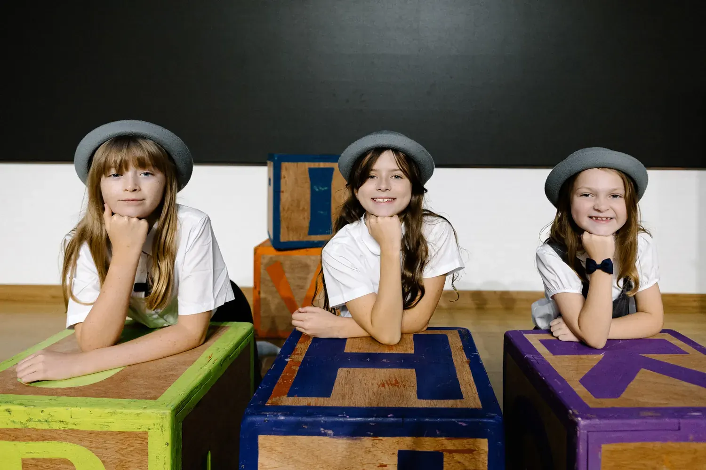
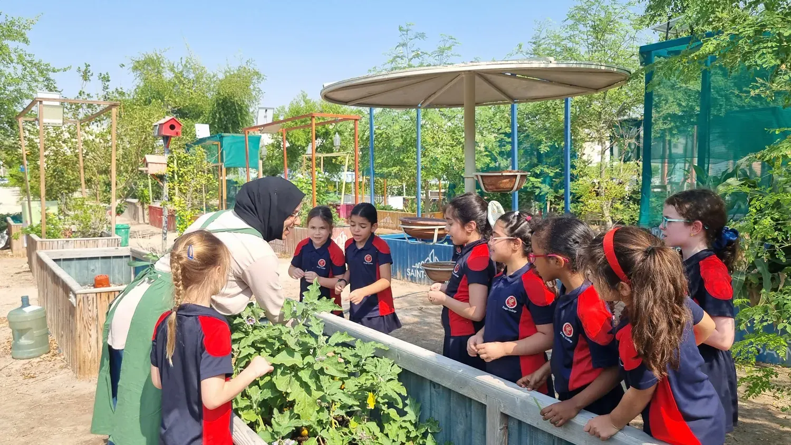
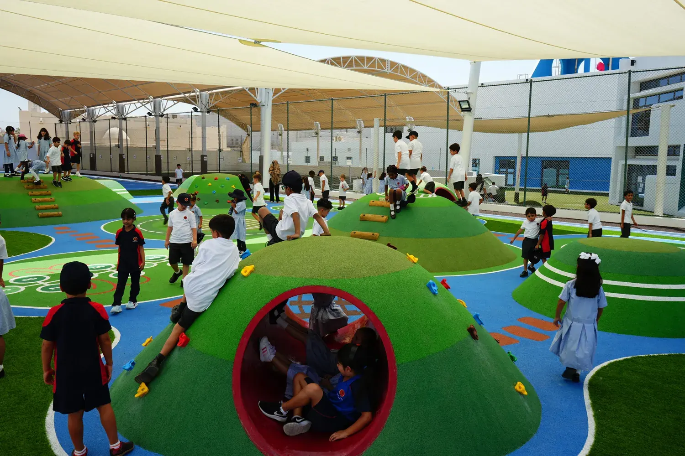

- Home
- Open Days
Open Days
Join Us for an Open Day at King’s College Doha
We extend a warm invitation to prospective families to immerse themselves in the King’s College Doha experience. Our Open Days provide the perfect opportunity to discover life at King’s — to meet our Senior Leadership Team, explore our learning environment, and gain genuine insight into what makes our school Qatar’s premier British international school.
At King’s, we also welcome pupils to experience a taster day, allowing them to spend time in class and engage with our community firsthand under the caring guidance of our dedicated staff.
Open Days are scheduled regularly throughout the academic year. If no upcoming dates are listed, please complete the brief form below, and our Admissions Team will ensure you receive early notification once the next event is confirmed.
We eagerly anticipate meeting you and introducing you to the vibrant King’s College Doha community.

The secure form opens on the official King’s College Doha website.
Why Attend an Open Day?
Attending an Open Day provides a vital, in-depth understanding of the learning culture and daily life at King's College Doha. During your tour, you will observe firsthand how our exceptional educators, combined with our small class sizes and highly enriched British curriculum, cultivate an environment where every student excels—academically, personally, and socially.
This is your direct pathway to engage with our Senior Leadership Team, discuss specific educational priorities, and absorb the unique energy and collaborative spirit of our school community. Whether you are actively planning immediate enrolment or mapping out your child’s long-term educational journey, our Open Day will provide you with absolute clarity for making the best decision for their future.

Who Should Attend?
Our Open Days are specifically designed for parents and guardians of prospective students seeking transparency and quality. You will learn extensively about the Outstanding educational offering across both the Al Thumama (Pre-Prep) and Mesaimeer (Prep, Senior, and Sixth Form) campuses. Whether you are a local family seeking the highest standard of British education in Qatar or an international family planning a move, our events provide critical insight into our academic rigour and nurturing community.
You will gain a nuanced appreciation for our broad curriculum, the scope of our enriching co-curricular opportunities, and the specific King’s Identity values that underpin our success. It is the perfect venue to see how we instill the essential confidence, curiosity, and courage students need to thrive in the classroom and beyond.

What to Expect
Join our Admissions Team for a professional, guided exploration of our exceptional facilities. You will move through our modern, purpose-built classrooms, visit specialized learning zones, and see the dedicated areas for sport, science, and the creative arts. Witness the ambitious atmosphere where our students learn, develop, and gain the conviction to reach their highest potential.
You will meet key members of our School Leadership Team and dedicated faculty to gain detailed insight into our personalized approach to learning and our unwavering commitment to educational excellence. Each Open Day session is structured to last approximately 1.5 to 2 hours, ensuring you have ample time to explore, ask detailed questions, and fully appreciate what makes King’s College Doha a truly exceptional place to learn and belong.